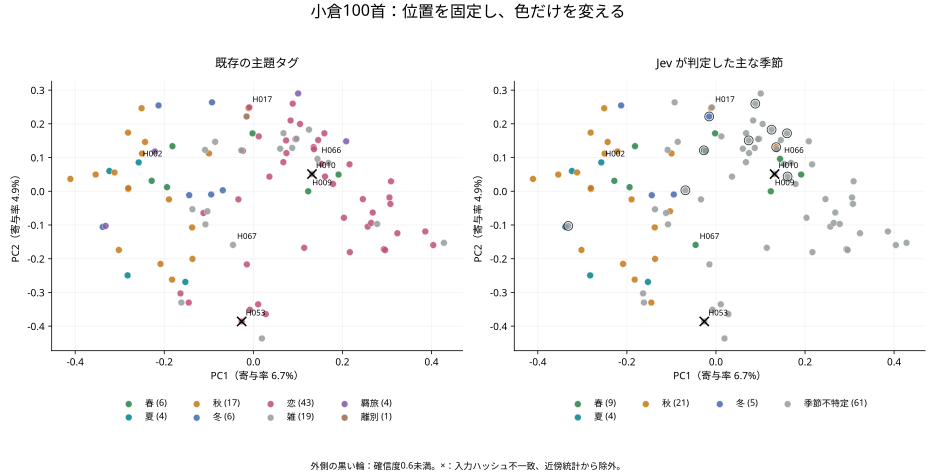
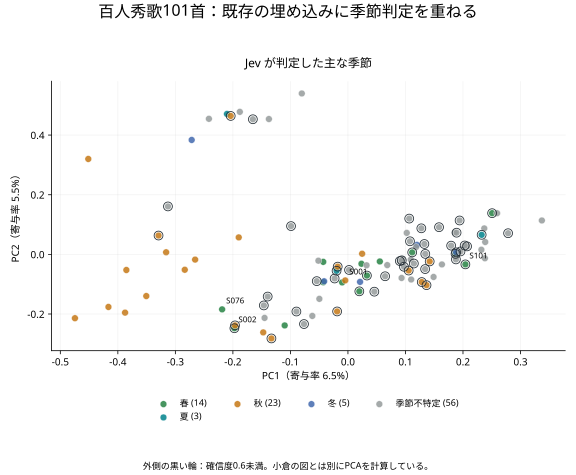

季節の色は、
意味の地図と重なるか
同じ秋を詠む歌は、数字の地図でも近くにいるのだろうか。これまでの埋め込みに、JevとGPTが読んだ「季節の色」を重ねてみる。文献の部立も並べ、今回の条件でどんな結果が得られたかを、一首ずつ確かめる。
全201首の季節判定一覧へ → 歌・Jev・GPT・資料の分類を並べて読む。
Luna根拠付きの追加実験へ → 季節のみの判定と、根拠・説明を求めた判定を比べる。
1. 地図と色を別々に作る
第1章では、歌の本文からOpenAIの埋め込みを作り、その位置に既存の主題タグの色を付けた。そこで「春」「恋」「雑」を決めていたのは、埋め込みモデルではない。CSVに用意したタグである。埋め込みは歌どうしの近さを表し、色は別に与えていた。
今回は、TypeSafeの判定モデル jev-1.13.0 とOpenAIの gpt-5.6-luna に、本文から主な季節を選んでもらった。両者には同じ正規化本文と同じ季節の判断基準を渡す。歌番号、作者、既存タグ、文献の分類、埋め込み座標、他方のモデルの答えは渡さない。その結果を、保存済みの意味空間と比べる。
| モデル | 特徴・出力 | 今回の解析方法 |
|---|---|---|
| text-embedding-3-small / large | 本文を数値のベクトルへ変換する。今回はsmallが1536次元、largeが3072次元。意味の近さを連続的に表し、そのままでは「春」といった分類名を返さない。 | コサイン類似度で歌どうしの近さを測り、PCAで2次元に投影する。季節ラベルは後から加える。季節の分類器を新たに学習させたわけではない。 |
| Jev 1.13.0 | 状態と質問・選択基準を受け取り、型の決まった小さな判断を返す。Choiceでは選択肢と確率分布、Noulでは条件が成り立つモデル確率を得る。 | 七択で主な季節を分類し、四季への言及・恋・自然描写を別々に問う。分類の一致数や、意味空間の近傍との対応を数える。 |
| GPT-5.6-Luna | 推論を伴う生成モデルで、公式には費用効率を重視した大量処理向けの位置づけ。構造化出力で返す項目を指定できる。今回は「季節のみ」と「季節・根拠語句・説明」の二条件を試す。 | Jevと同じ主季節の問いを、推論設定mediumで一首ずつ判定する。最初は七択の結果だけを取得し、追加条件では短い根拠と説明を求める。自己申告の確信度は取得しない。 |
仕組みの説明は、OpenAIの埋め込みガイド、TypeSafe API仕様、GPT-5.6-Lunaのモデル仕様による。PCAは埋め込みを見やすくする解析手法で、JevやGPTのように季節を答えるモデルではない。また、JSONの形式を保証する構造化出力と、解釈の正しさは別の話である。
JevとGPTは「この歌はどの季節か」を問い、埋め込みは「この歌はどの歌と近いか」を測る。ここで比べるのは、この二つの結果がどの程度重なるかである。いずれも著名な和歌を学習時に見ている可能性があり、本文だけを渡したことは、既知の分類の影響がないことを保証しない。
2. 季節の歌と、季節のある歌
歌に季節があることと、歌集の中で季節の部に置かれることは、同じではない。恋や旅の歌にも、花や紅葉は現れる。そこでJevには、一首につき七つの質問を同時に投げた。
- 主な季節を一つ選ぶ。春・夏・秋・冬に、複数季節・季節不特定・判定困難を加えた七択。
- 四季それぞれへの言及を調べる。過ぎた季節や比喩も含め、春・夏・秋・冬について別々の確率を得る。
- 恋と自然描写を調べる。それぞれが中心的な関心かを問う。両方が当てはまることも認める。
主分類には Choice、個別の言及と主題には Noul を使った。Noulの0.5付近は「ほどほどの春」ではなく、春への言及があるかどうかを決めにくいという値である。質問文は英語、判定対象は日本語の古典本文とした。質問の全文は実行コードに固定している。
小倉のH002「春過ぎて夏来にけらし」では、主な季節は夏となり、春への言及も夏への言及も0.97だった。この分け方なら、春という語を消さずに、季節の移り変わりを残せる。
| 対象 | 春 | 夏 | 秋 | 冬 | 季節不特定 | 複数／困難 |
|---|---|---|---|---|---|---|
| 小倉100首 | 9 | 4 | 21 | 5 | 61 | 0／0 |
| 秀歌101首 | 14 | 3 | 23 | 5 | 56 | 0／0 |
小倉の既存CSVでは、季節タグがあるのは33首、空欄は67首だった。タグのある33首に限ると、Jevの主な季節は31首で一致した。不一致はH064とH078で、いずれも既存タグは冬、Jevは季節不特定だった。この31／33は、暫定タグとの一致率であって、学術的な正解率ではない。空欄も「無季」という正解には扱わない。
空欄の67首からは、8首に四季のいずれかが選ばれた。たとえばH024は既存主題が羇旅でも、紅葉を読む季節判定は秋になる。H066の山ざくら、H067の春の夜には春が選ばれた。部立と本文の季節を二つの軸として持つことで、元の分類を消さずに読みを足せる。ただし、H016を冬とする確信度0.43の答えのように、そのまま採用できない候補も含まれる。
Jevの「季節不特定」は、その質問と本文で主な季節を選べなかったという出力である。文学的に季節が存在しないことや、季節の解釈が不要であることを意味しない。
3. 文献ではどう分類されているか
文献側の手がかりとして、嵯峨嵐山文華館の小倉百人一首解説 [D-7]の全100首について、「部立」と出典を照合した。同館は『カラー小倉百人一首 二訂版』『もっと知りたい京都小倉百人一首』を参考文献として挙げている。今回はその公開解説を参照し、書籍そのものや諸注釈の見解一致まで調べたものではない。
同館が「四季」と明示するのは春6・夏4・秋16・冬6の32首。これとは別にH026は「雑（秋）」と記されている。秋の明示を含む33首として数えると、既存CSVの季節タグ33首すべてと対応した。残る67首は、恋・雑・羈旅などの分類であり、「本文に季節がない67首」を意味しない。
| 歌 | 参照資料の分類 | 比較で着目する点 |
|---|---|---|
| H015 君がため 春の野に出でて | 四季（春） | 雪も詠まれるが、資料の分類は春。 |
| H024 このたびは 幣も取りあへず | 羈旅 | 紅葉の季節と、旅の歌という分類が併存する。 |
| H026 小倉山 峰のもみぢ葉 | 雑（秋） | 「四季32首」と「季節の明示33首」の数え方の差。 |
| H064 朝ぼらけ 宇治の川霧 ／ H078 淡路島 通ふ千鳥の | 冬（H064） ／ 冬（H078） | Jevの季節不特定と資料の冬が異なる例。 |
| H067 春の夜の 夢ばかりなる | 雑 | 春の語があっても、資料の分類は雑。 |
秀歌の共通97首には「小倉の対応歌の部立」として参照先を付けた。秀歌だけにある4首は日文研の和歌データベース [D-8]で、S053は後拾遺集の哀傷、S073は新古今集の春上、S076は金葉集二度本の春、S090は新古今集の恋一に対応することを確認した。S090には本文異同があるため「出典歌の部立（異同あり）」と表示する。これらは秀歌の作業用本文を全て校訂したという意味ではない。
全首一覧では資料の分類をそのまま別列に置いた。Jev・GPTの答えとの違いは、部立と本文季節という問いの違いも含めて読む。
4. 同じ位置に、新しい色を置く

text-embedding-3-small の保存ベクトル、PCA実装、seedを使用。左右で位置と軸は同一。黒い輪はJevの確信度0.6未満、×は本文表記修正により入力ハッシュが一致しないH010・H053。図を拡大する。秋の色は左側に多い。しかし、春・夏・秋・冬が四つの島にきれいに分かれるわけではない。季節不特定の灰色も広く分布する。恋の比喩、風景の語彙、表記など、季節以外の手がかりも同時に位置を作っているからだと考えられるが、この図だけで各要因の寄与は分解できない。
Jevの補助判定では、既存の恋タグ43首中36首が「恋が中心」に0.5以上、季節タグ33首中28首が「自然描写が中心」に0.5以上となった。ここでも、部立と本文の中心主題を完全に同一視しない。0.5は集計用の仮の境界で、専門家が検証した採否基準ではない。
この2軸が表すのは、元の分散の約11.7％である。図上の見た目に続けて、次は1536次元の元の空間で近さを確かめる。
5. 近くにも同じ季節があるか
主な比較では、Jevが春夏秋冬を選んだ歌だけを取り出した。小倉39首、秀歌45首である。その集合の中で、各歌からコサイン類似度の高い5首を探し、同じ季節が占める割合を数えた。100首・101首全体から探した近傍ではなく、四季に分類された歌の間の近さである。
秋の歌が多ければ、無作為でも秋どうしが出会いやすい。そこで季節ごとの首数を保ち、同じ歌の位置に季節ラベルだけを10,000回置き直した。近傍関係は固定し、同じ歌を共有する関係も保つ。歌順の検査や、10×10の配置検査とは別の対照である。
| 既存の埋め込み | 対象 | 同季節率 | 無作為の期待値 | 差 |
|---|---|---|---|---|
| 小倉 small・本文＋読み | 39首 | 54.4％ | 35.4％ | +19.0ポイント |
| 小倉 large・本文＋読み | 39首 | 55.9％ | 35.4％ | +20.5ポイント |
| 小倉 small・本文のみ | 39首 | 54.4％ | 35.4％ | +19.0ポイント |
| 秀歌 small・本文のみ | 45首 | 50.7％ | 36.1％ | +14.6ポイント |
この条件では、季節の分類と意味空間の近さに対応が見られた。片側のラベル置換検査では、小倉の三条件はいずれも10,000回中0回、秀歌は5回が観測値以上だった。補正した置換p値はそれぞれ約0.00010、0.00060である。探索的な比較であり、季節判定そのものの正しさや、定家の配置意図を示す確率ではない。
確信度0.6以上に限定した確認でも、同季節率は小倉smallの36首で54.4％（無作為36.5％）、秀歌の25首で56.0％（同35.0％）だった。ただし、絞り込むと近傍を探す集合自体が変わるため、数値の上昇を「判定性能の改善」とは読めない。この境界も探索上の設定であり、古典和歌で校正されたものではない。
季節不特定も含めた集計と、比較範囲の注意
入力が一致する小倉98首全体では、smallの同分類率は60.8％、無作為の期待値は41.5％。秀歌101首全体では47.5％、期待値37.6％だった。こちらは「季節不特定どうし」も同分類と数えるため、表S-2とは問いが異なる。第1章の既存主題による最近傍率とも、分類・対象数・近傍数が違い、改善幅として直接比較できない。
小倉の本文のみ条件の埋め込みに重ねるJevラベルも、本文＋読みから得た同じ判定を使う。この行は埋め込み入力を変えた感度確認であり、両モデルの入力を完全にそろえた新実験ではない。小倉と秀歌も多くの歌を共有し、独立した追試ではない。
6. 共通歌で判定は変わるか

小倉と秀歌の共通97首では、主な季節の判定が一致したのは81首、異なったのは16首だった。目立つのは確信度の差である。小倉の中央値は0.94、秀歌は0.59。0.6未満は小倉10首、秀歌51首に及んだ。
小倉には漢字仮名交じり本文と読みを渡した。一方、秀歌の作業用本文は、濁点を省いた仮名や踊り字を含む読み寄り表記で、別の読み列を持たない。歌の違いだけでなく、入力の違いもある。TypeSafeの公式モデル説明も、英語以外の言語で性能が均一ではないとしている。今回の差を表記だけの影響と断定するには、同じ歌で表記条件を変える対照実験が必要になる。
| 小倉／秀歌 | 小倉側の判定 | 秀歌側の判定 | 読み返す観点 |
|---|---|---|---|
| H002／S002 | 夏（1.00） | 春（0.43） | 春が過ぎ、夏が来たという時間関係を読めているか。 |
| H015／S018 | 春（0.93） | 冬（0.66） | 春の野と降る雪のどちらを主な季節としているか。 |
| H024／S023 | 秋（1.00） | 季節不特定（0.50） | 紅葉の語と旅の場面をどう読んだか。 |
とくにH002／S002は、同じ歌でも分類器の読みが変わることを示している。これを「秀歌では春の歌に変わった」とは解釈しない。モデルの判定、本文表記、歌集の部立を分けておく必要がある。
これは今回の表記と質問で得られた判定の差である。季節不特定が61首と56首だったことだけから、二つの歌集の季節感の強弱までは判断しない。
7. GPTにも同じ季節を尋ねる
まず「季節のみ」の条件として、同じ本文と主季節の質問をGPT-5.6-Lunaにも渡した。Jevの判定や文献の分類を教えて答えを合わせる操作はしていない。両者の出力を比較すると、次のようになった。
| 対象 | JevとGPTの一致 | 資料の季節とJev | 資料の季節とGPT |
|---|---|---|---|
| 小倉100首 | 95／100首 | 31／33首 | 33／33首 |
| 秀歌101首 | 82／101首 | 27／35首 | 35／35首 |
資料との比較は季節が明示された歌に限る。小倉は四季部立32首とH026「雑（秋）」の計33首、秀歌は小倉の対応歌33首と独自歌の春2首の計35首である。秀歌の共通歌の参照は小倉側の分類なので、異文を検証した正解データではない。
| 対象 | 判定済み | 春 | 夏 | 秋 | 冬 | 季節不特定 | 複数／困難 |
|---|---|---|---|---|---|---|---|
| 小倉 | 100首 | 9 | 4 | 21 | 6 | 60 | 0／0 |
| 秀歌 | 101首 | 11 | 4 | 21 | 6 | 59 | 0／0 |
| 歌 | Jev | GPT | 資料の分類 |
|---|---|---|---|
| H016 | 冬 | 季節不特定 | 離別 |
| H039 | 秋 | 季節不特定 | 恋 |
| H064 | 季節不特定 | 冬 | 四季（冬） |
| H078 | 季節不特定 | 冬 | 四季（冬） |
| H083 | 季節不特定 | 秋 | 雑 |
H064・H078ではGPTが資料と同じ冬を選んだ。一方、H083は資料が雑で、Jevは季節不特定、GPTは秋だった。文献と違う分類でも、問うているのが部立か、本文の場面かによって意味が変わる。全ての歌を四季へ押し込む比較にはしない。
小倉と秀歌の共通歌に対するGPTの一致は97／97首。Jevは81／97首だった。小倉と秀歌で表記・読みの追加条件が異なるため、これは同一入力を繰り返した安定性試験ではない。
同じ歌の集合にそろえて、埋め込みの近傍とも比べる
JevとGPTがともに春夏秋冬を選んだ歌の共通部分を先に取り出し、その中で上位5近傍を計算した。各行では同じ歌・同じ近傍に二つの分類を重ねる。無作為期待値は各モデルの季節別首数を保って計算する。
| 意味空間 | 対象 | Jev同季節率 | GPT同季節率 |
|---|---|---|---|
| 小倉 small | 37首 | 56.8%（35.7%） | 56.8%（35.7%） |
| 小倉 large | 37首 | 59.5%（35.7%） | 59.5%（35.7%） |
| 秀歌 small | 37首 | 53.0%（34.5%） | 51.9%（31.1%） |
今回の小倉の共通37首は、両モデルのラベル自体が全て同じだった。そのため近傍率も同じになり、追加の性能証拠にはならない。集合の選び方が表S-2とは異なるため、そちらとの率の大小を性能差として読まない。この表も分類と意味の近さの対応であり、どちらのモデルが正しく季節を読んだかの判定ではない。季節不特定を含む同一全体集合の結果は比較JSONに記録した。
8. Lunaに根拠も求めてみる
もう一つの条件として、Lunaに「季節・根拠となる短い語句・日本語の説明」を一緒に求めた。本文、主季節の指示と七択、モデル、推論medium、出力上限は前回と同じで、追加したのは説明の指示と出力項目である。前回の答えや文献の分類は見せず、全201首を改めて判定した。
| 対象 | 季節が変わった歌 | 資料の季節と一致：季節のみ → 根拠付き |
|---|---|---|
| 小倉100首 | 1／100首 | 33／33 → 33／33首 |
| 秀歌101首 | 1／101首 | 35／35 → 34／35首 |
| 歌 | 季節のみ → 根拠付き | 根拠付き条件の説明 |
|---|---|---|
| H012 | 季節不特定 → 秋 | 天上の乙女が舞う七夕の情景を詠み、古典和歌では秋の季節感を伴う題材として読めるため、主な季節は秋です。 |
| S005 | 冬 → 秋 | かさゝきが天の川に橋を渡す七夕の情景に、置く霜が描かれており、秋の夜が主な舞台である。 |
H012の説明では、入力本文にない「七夕」という場面が補われている。説明が付いたことで、判定だけでは見えなかったこのような読みの補足も確認できる。ここでは、その場面設定を文献で確認した事実として採用しない。
根拠付き条件での小倉・秀歌の共通97首の判定一致は95／97首。季節のみ条件では97／97首だった。
両条件は推論設定mediumで、後の条件だけ内部推論を有効にしたわけではない。得た説明はモデルが生成した短い説明であり、文学的に検証済みの注釈や内部の思考過程そのものではない。また各条件一回の実行なので、判定の変化を説明要求の効果と通常の実行変動に分けることはできない。
根拠語句を入力本文と照合すると、4首（H084・S009・S013・S030）で表記が完全には一致しなかった。一覧では生成された表記を直さず、該当箇所に注記した。引用の一致を確認する検査であって、説明の文学的な妥当性の検証ではない。
9. 今回の実験として読む
Jevについて、ここで示すのは「この本文と質問で試すと、こういう結果になった」という記録である。既存の意味空間に季節の分類を重ねると、近傍との対応が見られた。一方で、共通歌の入力表記が異なる条件では判定が変わる例もあった。これを和歌全般での性能や、定家の意図の説明へ広げるものではない。
GPTとの一致、資料の分類との一致、埋め込み上の近さは、それぞれ別の比較である。Choiceの確信度も正解率ではない。個々の結果は一覧から歌と資料へ戻って読むための観察として残す。
10. 方法・データ・再現
- 実行日：2026-09-20。Jevは
jev-1.13.0に固定。各歌一回の有効応答を保存し、既存の埋め込みは再生成していない。 - 小倉100首は既存Wikisource由来CSV、秀歌101首は従来の非公開作業用本文。正規化は既存コードを共用し、歴史的仮名遣いを現代化していない。本文出典・利用条件。
- H010・H053には過去の表記修正があった。修正前の表記に戻すと保存ベクトルの入力ハッシュが一致することを確認。図では位置を残して×を付け、数値比較では除外した。両首ともJevは季節不特定のため、四季39首の集計対象には元から入らない。
- ラベル置換はseed
20260920、10,000回。確信度0.6の絞り込みとNoul 0.5の集計は探索的設定。多くの条件を見た比較であり、確認的な仮説検定や独立した再現試験としては扱わない。 - 有効201応答の使用量は入力239,351、出力35,654トークン。S053は最初の応答で選択値と最大確率が不一致となり、再取得した整合する応答を採用した。最初の無効応答の使用量は保存できておらず、この合計には含まれない。
- 最初のGPT季節のみ条件は
gpt-5.6-luna、Responses API、推論medium、構造化出力の七択。主質問と選択基準、入力本文はJevと共通。Jevの補助6問はGPTには送らず、主季節だけを比較した。各条件一回の実行結果を保存し、反復時の再現性や速度・費用の優劣は調べていない。 - Luna根拠付き条件では、同じ本文・モデル・主季節の指示・推論mediumのまま、短い根拠語句を最大2個と180字以内の説明を追加した。応答は前回と別に保存し、ラベルの変化を比較した。
- 公開するのは集計、各首の判定ラベル、短い根拠語句と生成説明、文献参照、図、方法、再現コード。一覧の歌は既公開の参照資料ページから掲げる。秀歌本文の完全データ、APIリクエストと応答のキャッシュ、埋め込みベクトル、APIキーは公開しない。
各首の判定一覧 ／ モデル比較JSON ／ 文献対応JSON ／ Jev集計JSON ／ 詳細な方法・再実行手順 ／ モデル記録
この補章と全首一覧は、Codex GPT-6 Astra Ultraの支援で分析・実装・本文整理を行い、まとめた。各歌の季節判定はTypeSafe JevおよびOpenAI GPT-5.6-Luna、根拠付き条件の語句・説明の生成はGPT-5.6-Lunaによる。従来章に対するレビュー協力は、本補章の検証済み・査読済みを意味しない。
地図と歌を行き来する
第1章の意味空間へ戻る ／ 終章を読む ／ 更新履歴